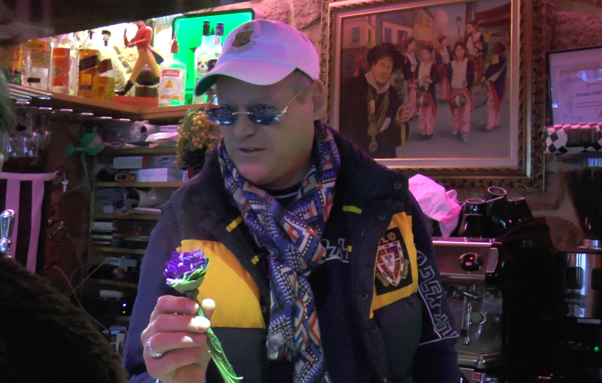

SOLO & DUO PROJECTS
 * Jouer, 2022
* Jouer, 2022 * La Chance with Kahina Loumi, 2021
* La Chance with Kahina Loumi, 2021
* Focul care Arde, 2020

* La zone périlunaire, 2019

* Malbroro love story (videos) with Gullaume Le Clouërec and Boris Regnier, 2019

* Le chercheur d'or, 2018
GROUP EXHIBITIONS
 * Pluie violette, during Voilà l'été, expérience Generator 2014-2022, Quartier général, Quimper, 2022
* Pluie violette, during Voilà l'été, expérience Generator 2014-2022, Quartier général, Quimper, 2022 * La Réserve, for La Grande Diagonale, curated by Bruno Peinado, 2021
* La Réserve, for La Grande Diagonale, curated by Bruno Peinado, 2021PARTICIPATIONS IN PUBLICATIONS
* STANZE, Palomar projets, 2020
* La faim des haricots, Les Éditions du Motel, 2020

Various materials, audio speakers broadcasting a song composed by the artist Harilay Rabanjamina for the installation, text written along the trip from France to Romania, translate from French to Romanian and prints on sheets to take away
Timişoara French Institute, Romania
February 2020